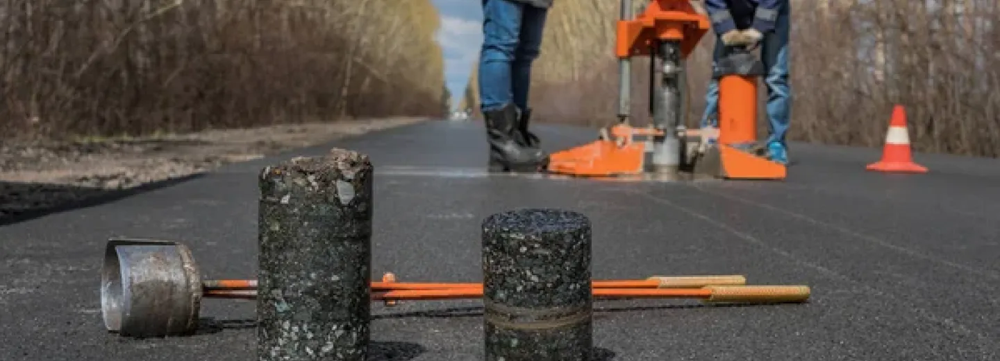
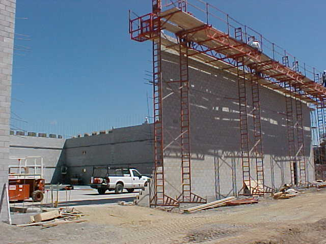
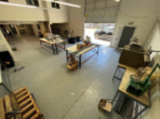
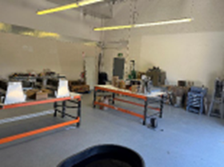

Project Details
- Category: Quality Management & Materials Testing Projects
- Owner: Public agency program
- Location: California
- Delivery Method: Project-specific delivery
- Status / Completion: Program support

Caltrans District 4 manages heavy roadway reconstruction across the South Bay and greater Bay Area, requiring continuous materials verification at production plants and construction sites.
S2 Engineering provides : � Asphalt, concrete, and aggregate plant inspection � Source material sampling and testing � District Materials Engineering (DME) testing � JMF verification and PSU testing � Field sampling and laboratory testing � QA reporting within the Caltrans DIME system � Staff augmentation for Caltrans laboratories
S2 expanded Caltrans� laboratory capacity during peak SB-1 construction periods, ensuring uninterrupted testing operations and on-time project delivery across high-volume corridors.
6646241599c712851b36cf45 248850610

CISI Safeway CMU

D4 Mat Testing 2

D4 Mat Testing